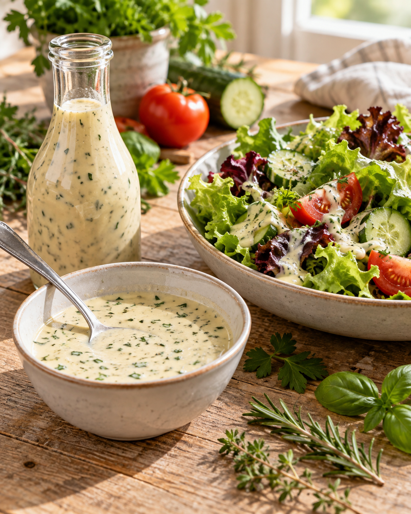

Das macht den Unterschied
Cremiges Balsamico-Dressing
Von Viki Fuchs

Zutaten
200 gHeller Balsamico
250 gWasser
80–100 gZucker, je nach gewünschter Süße
20 gSalz
20 gGemüsebrühepulver, gekörnt
200 gSaure Sahne oder Schmand
300 gNaturjoghurt, 0,1 % Fett
60 gMittelscharfer Senf
200 gNeutrales Pflanzenöl
¼ TLSchwarzer Pfeffer
Nach BeliebenSchnittlauch, Petersilie, Thymian, Rosmarin und Basilikum, fein gehackt
Zubereitung im Topf
- Hellen Balsamico, Wasser, zunächst 80 g Zucker, Salz und Gemüsebrühepulver in einen Topf geben. Unter Rühren aufkochen und bei mittlerer Hitze etwa 10 Minuten leicht köcheln lassen.
- Den Topf vom Herd nehmen. Saure Sahne oder Schmand, Naturjoghurt, Senf, Pflanzenöl und Pfeffer hinzufügen.
- Alles mit einem Stabmixer 5–8 Sekunden cremig aufmixen. Die fein gehackten Kräuter kurz unterrühren. Abschmecken und bei Bedarf den restlichen Zucker ergänzen.
Zubereitung im Thermomix
- Hellen Balsamico, Wasser, zunächst 80 g Zucker, Salz und Gemüsebrühepulver in den Mixtopf geben und 6 Min. / Varoma / Stufe 1 erhitzen.
- Saure Sahne oder Schmand, Naturjoghurt, Senf, Pflanzenöl und Pfeffer dazugeben und 10 Sek. / Stufe 5 vermischen.
- Die fein gehackten Kräuter kurz mit dem Spatel unterheben. Abschmecken und bei Bedarf den restlichen Zucker ergänzen.
Abfüllen & Aufbewahren
Das Dressing in sehr saubere Flaschen oder Gläser füllen, zügig abkühlen lassen und direkt in den Kühlschrank stellen. Vor dem Servieren kräftig schütteln. Der Essig unterstützt die Haltbarkeit, durch Joghurt und saure Sahne bleibt das Dressing jedoch leicht verderblich. Gut gekühlt aufbewahren und am besten innerhalb weniger Tage verbrauchen.